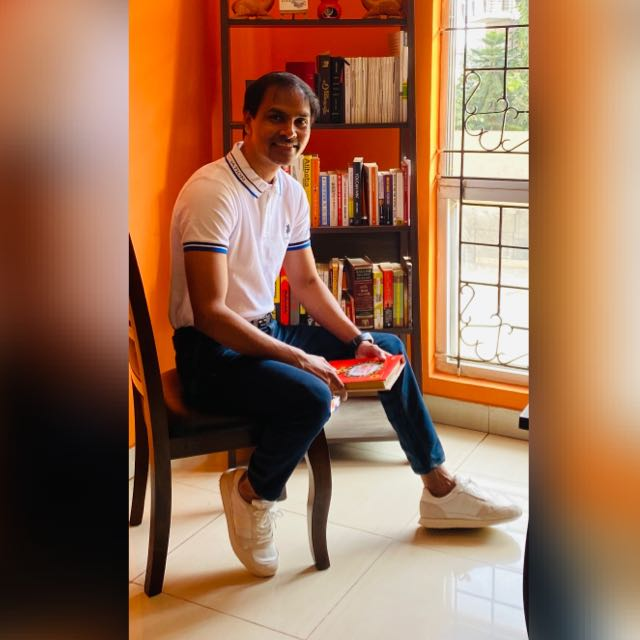

RESUME
EDUCATION
-
2017 - 2021
BTech In Computer Science Engineering
CGC Technical Campus Mohali
BTech in Computer Science and Engineering (CSE) is a four-year undergraduate program that provides a strong technical foundation in software development, databases, data structures, algorithms, and system design. The curriculum emphasizes analytical thinking, problem-solving, and hands-on application through coding projects, lab sessions, and internships. In addition to core computing subjects, the program exposes students to areas such as data analytics, software engineering, and human-computer interaction—skills that are directly relevant to the role of a Business Analyst. My CSE background has enabled me to bridge the gap between technical teams and business stakeholders, with a deep understanding of both system capabilities and business needs. This technical grounding, combined with tools like SQL, Excel, and Power BI, has empowered me to extract insights from data, map functional requirements, and contribute to solution design. Pursuing a career in Business Analysis was a natural progression, allowing me to leverage my tech skills in a strategic, stakeholder-focused role.
RESUME
Experience
-
Feb 2024 - Oct 2024
Associate Business Analyst
Poplify Pvt Ltd
As a Business Analyst at Poplify, I worked at the intersection of technology, strategy, and product delivery, supporting over 10 end-to-end projects. My role involved gathering and refining business requirements through 50+ stakeholder sessions, translating them into detailed user stories and acceptance criteria that enhanced project clarity and delivery accuracy. To support data-driven decisions, I conducted in-depth market and industry research, which contributed to a 15% improvement in strategic planning. I collaborated with cross-functional teams in an Agile Scrum environment to manage epics, define over 100 user stories, and implement more than 75 test scenarios in coordination with QA teams. Throughout these projects, I created key documentation including BRDs and FRDs, and validated core platform functionalities such as authentication, communication flows, and payments—achieving a 98% alignment with business requirements. My work at Poplify sharpened my ability to translate business needs into functional outcomes, ensuring that solutions not only met stakeholder expectations but also optimized user experience.
-
May 2023 - Jan 2024
Business Analyst Apprenticeship
GrowMeOrganic
At GrowMeOrganic, I supported business and product teams by combining market research, data analysis, and user-focused design to drive actionable insights. I conducted quarterly research across 10+ industry trends, recommending strategic shifts that improved alignment with market demands by 20%. Working closely with stakeholders, I analyzed client feedback from over 100 surveys to identify areas for improvement—resulting in a 15% boost in customer satisfaction. I contributed to multiple projects by gathering and documenting requirements for BRDs, FRDs, and due diligence reports, enhancing clarity and communication across teams. In support of product development, I created 30+ wireframes, mockups, and UML diagrams using Balsamiq, helping streamline design processes and reduce iteration time by 10%. This role strengthened my ability to turn client insights and market data into structured documentation and intuitive designs, ultimately improving both stakeholder alignment and user experience.
-
May 2022 - Feb 2023
Business Development Associate
Think & Learn Pvt. Ltd (BYJU'S)
At BYJU'S, I played a key role in bridging customer needs with tailored product solutions to support data-driven sales strategies. I conducted outreach and scheduled over 50 product demonstrations monthly, identifying high-potential leads and building strong client relationships that led to a 20% increase in engagement rates. By aligning customer requirements with the right solutions, I contributed to a 15% improvement in sales conversion and a 25% boost in overall customer satisfaction. I also adapted lead generation strategies in response to shifting market dynamics, consistently helping the team meet or exceed monthly targets by 10%. This experience enhanced my ability to combine analytical thinking with client-facing communication—ensuring business goals were met through both strategic insight and operational execution.
WHERE I DID
Companies


WHAT I KNOW
MY SKILLS

Hard Skills
- Requirement Gathering & Analysis
- Agile & Waterfall Methodologies
- SDLC (Software Development Life Cycle)
- Project Management & Sprint Planning
- Data Analysis & Visualization (Power BI, Excel)
- SQL & Database Querying
- Business Process Mapping
- CRM Tools & Customer Insights
- Wireframing & Prototyping (Balsamiq)
- Automation & RPA (UiPath – Pursuing)
- Collaboration Tools (JIRA, Kanban)
- Professional Communication & Documentation (BRD, FRD, PDD)

Techniques
- Business Analysis
- Agile Methodologies
- Business Process Automatation
- Setting up Process
- Business Intelligence & SDLC

Tools and Software
- JIRA, Kanban
- Advanced Excel & Pivot Tables
- SQL, MySQL
- Power BI
- Google Analytics
- Balsamiq, Lucidchart
- UiPath RPA (Pursuing)
- CRM Software (Leadsquared, Ameyu)
- ERP (Microsoft Dynamics 365)
- GitHub
- ClickUp
- Slack

Licenses & certifications
- IIBA ECBA – Entry Certificate in Business Analysis (Exam Prep)
- From Excel to Power BI – Knowledge Accelerators
- Business Intelligence Using Power BI – Skill Nation
- Successful Negotiation: Essential Strategies & Skills – University of Michigan
- Career Essentials in Business Analysis – Microsoft & LinkedIn
WHAT I DO
ACHIEVEMENTS

15+
COMPLETED PROJECTS

04
HAPPY Companies

04
AWARDS RECIEVED
As an influential and highly regarded in digital and tech process automation & online marketer, Riya brings the idea of "thought leadership" to life
Divaker Pulkuri - HR Head Sangeetha Mobiles
He had excellent time management skills and had a knack for keeping everyone calm and productive during intense crunch periods
Varun Deva
I was consistently impressed by their dedication and grit, which they utilized to make significant contributions to the team.

Amulya